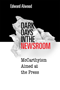
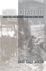
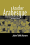

|
Dark Days in the Newsroom
McCarthyism Aimed at the Press
Alwood, Edward
Winner of the 2008 national Tankard Book Award from the Association for Education in Journalism and Mass Communication
Named 2008 Best Book of the Year: Adult Non-Fiction by the Connecticut Press Club |

|
Hapa Girl
A Memoir
Chai, May-lee
Named one of 2008’s Notable Books in the Kiriyama Prize |

|
Drug Smugglers on Drug Smuggling
Lessons from the Inside
Decker, Scott H. and Margaret Townsend Chapman
Outstanding Academic Title, Choice |

|
A is for Art Museum
Friedland, Katy and Marla K. Shoemaker Honorable mention in the AAM (American Association of Museums) design competition |

|
Model City Blues
Urban Space and Organized Resistance in New Haven
Jackson, Mandi Isaacs
Urban Communication Foundation Jane Jacobs Urban Communication Publication Award, 2008 |

|
Another Arabesque
Syrian-Lebanese Ethnicity in Neoliberal Brazil
Karam, John Tofik
Winner of the Roberto Reis BRASA Book Award |

|
Savoring the Salt
The Legacy of Toni Cade Bambara
edited by Holmes, Linda Janet and Cheryl A. Wall
Selected as “‘The Best of the Best’ from the University Presses” Books You Should Know About” for the ALA Annual Conference, 2008 |

|
A Guide to the Great Gardens of the Philadelphia Region
text by Levine, Adam, photographs by Rob Cardillo
Received a Gold Award of Achievement for best book in the Garden Writers Association Media Awards Program, 2008
Received a Gold Award of Achievement for best photography (overall) in the Garden Writers Association Media Awards Program, 2008
Silver Award of Achievement for book photography in the Garden Writers Association Media Awards Program, 2008 (awarded to Rob Cardillo) |

|
Messiahs of 1933
How American Yiddish Theatre Survived Adversity through Satire
Schechter, Joel
Outstanding Academic Title, Choice |

|
Silent Gesture
The Autobiography of Tommie Smith
Smith, Tommie and David Steele
Author Tommie Smith received the Arthur Ashe Courage Award at the ESPYs
Named one of two “Adult Nonfiction Honor Books” by The Black Caucus of the American Library Association (BCALA)
Nominated for an NAACP Image Award in the category �Outstanding Literary Work � Biography/Autobiography� |

|
Forklore
Recipes and Tales from an American Bistro
Yin, Ellen
Winner of a Pewter award in the Gold Ink Awards in the cookbook category
Winner of the Gold ADDY Award — Publication Design — Cover
Winner of the Silver ADDY Award — Publication Design — Editorial Spread or Feature |

|
The Coolie Speaks
Chinese Indentured Laborers and African Slaves in Cuba
Yun, Lisa
Outstanding Academic Title, Choice |